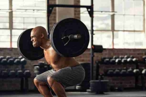

logo
Legs-
Leg workouts are an important aspect of a balanced, whole-body fitness routine that builds strength, speed, and stability.
It's important to stay consistent with your leg workouts since these large muscles are an integral part of your overall fitness. Plus, it's easier for your body to adapt to the workouts and develop good habits that will help you to meet your fitness goals.
Strong leg muscles keep your body balanced, which isn't possible if you focus solely on your upper body. Working on your glutes, quads, and hamstrings with exercises such as deadlifts, squats, and lunges helps to maximize and boost athletic performance.
Avoid overtraining your quads and balance your routine to target your glutes and hamstrings as well.
Lower-body muscles create a strong, stable foundation. Rooting your lower body into the ground helps to create resistance that travels upward into your core and upper body.
You utilize lower-body strength to do all types of movements, including upper-body movements such as throwing, batting, or reaching overhead.
Barbell Squat

Leg Press:
Exercise no.1- Barbell Squat
Instructions:
Hold the weight by its sides vertically at your chest. Keep your chest proud, and stand in a standard squat stance with your feet slightly outside hip width.
Breathe in, brace your core and bend your knees to squat.
Push through your feet to stand. Repeat for another rep.
While generally a safe exercise if done with the right form, there are some safety precautions to keep in mind when doing squats.
lower yourself as far as you can comfortably go.
Make sure you have a solid base.
Keep your eyes forward.
Keep your posture upright.
Only lift what you can handle.
Activate your core.
Exercise no.2- Leg Press
To start off, load the amount of weight onto the machine that you want to lift. How much weight you should choose depends on your overall fitness level. As a rule of thumb, novices should start out using half their body weight.
People with more experience can start at three quarters of their body weight. Wherever you start, getting the full range of motion out of your reps on the machine should be your goal.
Don't just focus on pressing the most weight you can! Extra weight with poor form gets you nowhere.
Be careful lifting the heavier plates, especially if you're just starting out. Don't be afraid to ask for help if someone has left hundreds of pounds on the machine. Also, be sure to keep the amount of weight even on both sides of the bars.
Uneven weight distribution can be dangerous to you and cause the equipment to break. Now, sit down and lie back on the machine facing the pressure platform.
Keep your feet shoulder-width apart. Shorter people will have to position their feet lower down on the pressure plate, while taller people will need to place their feet higher up.
Experiment until you find a position that's comfortable.
Grab onto the handles near your hips and get ready to press! Take a deep breath, then brace your core like you're doing a crunch.To complete the movement, engage your legs, pushing the weight away from your body until your knees are extended, and exhale while you push
Never lock your knees at the end of the motion! That puts strain on your joints, keeps your muscles from doing work, and could even cut off circulation in your legs. Another good way to prevent injury is to avoid arching your back.
Keep it flat against the backrest throughout the movement.